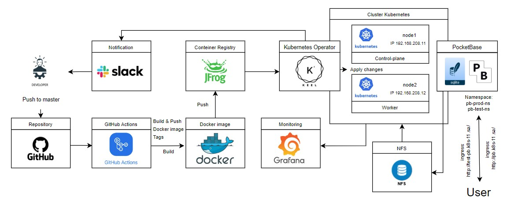

Project report.
Project's reporter: Shvedov Vitaliy
Group number: md-sa2-28-23
Description of application for deployment:
- Name of application: PocketBase.
- Programming language is this application written in: JavaScript.
- Data Base: Embedded database (SQLite).
- Git repository: ->Click here<-.
Pipeline. High Level Design:

Technologies which were used in project:
Orchestration: Kubernetes.
Automation tools: Github, Github Actions, Kubernetes Operator Keel.
SCM: GitHub.
Notification: Slack.
Other tools: Grafana, SQLite (Embeded), WEB Server (Embeded).
CI description:
Deployment flows short description:
Rollback flow description and implementation:
Links:
- feature 1
- feature 2
- feature 3
- feature 4